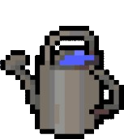

Days Survived: 0
Status: Fetching...

Soil Moisture: Fetching...

Status: Fetching...
Soil Moisture: Fetching...
Welcome to 🌱 InterwebPlants! Your goal is to keep your plant alive by watering it regularly. If you don't water the plant for a certain period, it will die. Here's how it works:
Try to survive as many days as possible and see the plants reach their final form!